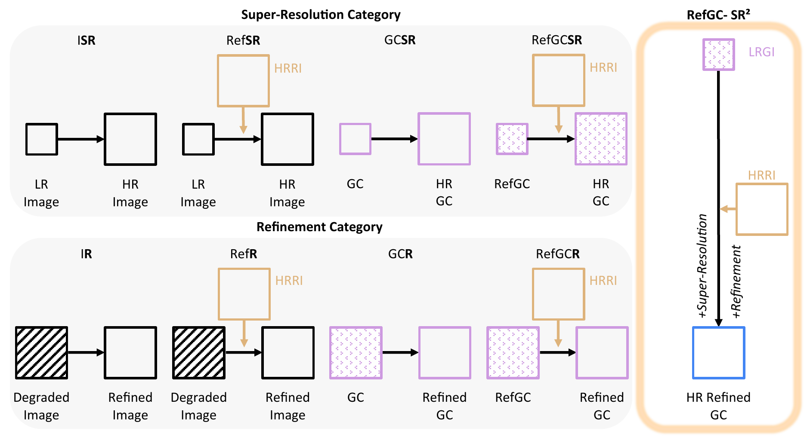

Results on our proposed benchmark dataset
LRGIs are synthesised by our DipRefGC from real-world HRRI–HRGT pairs; our model jointly upscales and refines them into 1024 × 1024 outputs.

 Ours
Ours

Reference-guided Super-Resolution and Refinement of AI Generated Content

Reference-guided generation (e.g., object compositing, customization) has progressed rapidly, yet current pipelines share a fundamental limitation: the object-centric high-resolution reference image (HRRI) provided by users is downsampled to a fixed low-resolution (LR) before being fed into the model, so the fine-grained details are discarded before the output is even produced. In addition, the generation step then introduces its own artifacts (e.g., identity distortion) on top of this loss. Existing reference-guided generated content refinement (RefGCR) methods can correct some of these artifacts but still operate in the LR domain; reference-guided super-resolution (RefSR) methods recover resolution but assume natural-image degradations and ignore the artifact distribution of generative pipelines. To address both gaps in a single formulation, we introduce a new task: reference-guided generated content super-resolution-refinement (RefGC-SR2), where the original HRRI is reused at the post-processing stage to recover lost details, refine generative artifacts, and upscale the output simultaneously. We construct the first real-world triplet data generation pipeline for this RefGC-SR2 task, training a diptych-conditioned generator to synthesize paired low-quality anchors that public pretrained models cannot provide. We further present a frequency-aware diffusion transformer model for RefGC-SR2 that selectively injects fine details from the HRRI while removing generative artifacts. Extensive experiments demonstrate that our RefGC-SR2 model successfully (i) refines the object identity faithfully with respect to the reference, and (ii) recovers high-resolution details, so that the final result is significantly higher quality and practically more usable compared to existing RefGCR and RefSR baselines.
We formulate RefGC-SR2, the first post-processing task that reuses the user-provided HRRI as a recovery source to jointly upscale and refine reference-guided generations.
We construct RefGC-SR2 Dataset, the first real-world HRRI–HRGT-LRGI triplet dataset, built via our diptych-conditioned generator DipRefGC that produces pose-aligned realistic generative artifacts.
We propose the first RefGC-SR2-targeted model with frequency-aware modules (FreqMoLE + frequency-based loss) injected into a frozen FLUX-Kontext backbone to remove artifacts while increasing resolution.
RefGC-SR2 is the first task that jointly satisfies all four criteria: a generated content (GC) input, a high-resolution reference image (HRRI) input, super-resolution, and artifact refinement.

Table 1. Comparison of related image enhancement tasks. RefGC-SR2 is the first task that jointly satisfies all four criteria.

Task taxonomy. Figure of related image enhancement tasks and how our RefGC-SR2 setting differs from them.
We curate real-world (HRGT, HRRI) pairs from multi-view videos and synthesise pose-aligned LRGIs with DipRefGC, our diptych-conditioned RefGC generator.

Figure 2. Construction pipeline of our RefGC-SR2 Dataset. Stage 1 curates real-world HRRI-HRGT pairs from object-centric multi-view videos through VLM-based filtering, masking, and human validation. Stage 2 synthesizes the corresponding LRGI with DipRefGC, which combines HRRI appearance with HRGT-derived pose conditions using Inpainting and Canny ControlNets. This produces pose-consistent, generative artifact-containing LRGIs paired with HRRI and HRGT, enabling supervised training for RefGC-SR2.
Naively running off-the-shelf RefGC models alters the object pose between LRGI and HRGT, breaking pixel-level supervision. DipRefGC adopts a diptych formulation that spatially disentangles appearance and pose: the left panel carries the segmented HRRI as the appearance reference, while the right panel carries HRGT-derived structural conditions (background, object mask, Canny edge). Two LoRA-tuned ControlNets independently control what to generate (appearance) and how to generate it (pose).

Figure 3. RefGC-SR2 triplet examples with LRGI, HRRI, and HRGT.
Our RefGC-SR2 Model freezes a FLUX-Kontext backbone and injects FreqMoLE (Frequency-adaptive Mixture of LoRA Experts) into every DiT block, supervised by a frequency-based loss that aligns low frequencies with HRGT and high frequencies with HRRI.

Figure 5. Motivation experiments for our method: (a) shows the layer-wise frequency characteristics of the FLUX-Kontext model. (b) compares the similarity between latent features of LRGI, HRRI, and HRGT. (c) shows the low-frequency similarity between their latent features.

Figure 4. Overview of our RefGC-SR2 model. The frozen VAE encodes the inputs (LRGI, HRRI, HRGT (train only)) and T5 encodes the text prompt. We insert trainable FreqMoLE modules into a frozen FLUX-Kontext backbone, supervised by our frequency-based loss $\mathcal{L}_f$ that aligns low-frequency components with HRGT and matches object-region high-frequency statistics with HRRI.
LF energy saturates within the first ~5% of FLUX-Kontext layers and primarily encodes global structure. In the latent space, LRGI is consistently closer to HRGT than HRRI on LF components.
⇒ LF expert routed mainly through $\alpha$-weighted path, supervised against HRGT.
HF energy emerges sharply in the last ~10% of layers and encodes fine details. Since HRRI and HRGT differ in viewpoint, we transfer HF detail via channel-wise statistics, not pixel-wise alignment.
⇒ HF expert routed mainly through $(1-\alpha)$ path, supervised against HRRI.
Our RefGC-SR2 model achieves SOTA across SR, RefSR, and RefGCR baselines.

Table 2. Quantitative comparison on RefGC-SR2. The best and second-best results are highlighted in bold and underline, respectively. The Reference column indicates whether the model uses an additional HRRI. Asterisk (*) denotes that the model has been finetuned on our dataset.

Figure 6. Qualitative comparison between our RefGC-SR2 model and other models. (a) shows qualitative results on the RefGC-SR2 Benchmark, while (b) and (c) present results in the in-the-wild benchmark. Colored arrows mark failure cases of competing methods (see legend), and blue arrows indicate our results. Our RefGC-SR2 model better preserves fine details from HRRI and achieves high-quality upscaling compared to competing methods.
We further evaluate generalisation on outputs from real compositing and customisation pipelines, treating them as LRGIs.

Table 3. In-the-wild evaluation, where outputs from compositing and customization models are treated as LRGI given HRRI and HRGT. Compositing denotes results using outputs from compositing models as LRGI, and Customization denotes results using outputs from customization models as LRGI.

Figure 7. Top-rank-1 user study results. The user study is conducted with 16 participants comparing one model from each SR, RefSR and RefGCR task and RefGC-SR2 (Ours).
Competing baselines receive top-1 votes in at most 8% of cases.
Both FreqMoLE and the frequency-based loss $\mathcal{L}_f$ contribute to the final result. Combining them yields the best score across every metric.
| Setting | (a) | (b) | (c) | (d) Ours |
|---|---|---|---|---|
| FreqMoLE | ✗ | ✗ | ✓ | ✓ |
| $\mathcal{L}_f$ | ✗ | ✓ | ✗ | ✓ |
| CLIP-I ↑ | 0.8437 | 0.8654 | 0.8673 | 0.8696 |
| DINO ↑ | 0.6870 | 0.7386 | 0.7317 | 0.7474 |
| PSNR ↑ | 16.3956 | 17.1981 | 17.3893 | 17.5148 |
| SSIM ↑ | 0.6068 | 0.6221 | 0.6221 | 0.6335 |
| LPIPS ↓ | 0.3538 | 0.2835 | 0.2896 | 0.2746 |
Table 4. Ablation of the proposed components on the RefGC-SR2 Benchmark. The best and second-best results are highlighted in bold and underline, respectively.

Figure 8. Qualitative ablation results of the proposed components. Adding $\mathcal{L}_f$ brings back HRRI-faithful detail while preserving HRGT structure, and FreqMoLE further restores fine-grained material properties (e.g., the cup's transparency — red arrows) that the baseline misses.
@inproceedings{sung2026refgcsr2,
title = {RefGC-SR\textsuperscript{2}: Reference-guided Super-Resolution and Refinement of AI Generated Content},
author = {Sung, Jeahun and Kye, Dahyeon and Kim, Soo Ye and Oh, Jihyong},
booktitle = {arXiv preprint},
year = {2026},
}